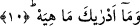
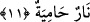

10. Nedir o (Hâviye) bilir misin?
Hâviyenin ne olduğunu sana hangi şey/kim öğretti? Burada yer alan “Onun” anlamına
gelen zamir “Hâviye”ye işâret etmektedir. Zamirin sonundaki “ha” harfi, sekt, yâni
durma harfidir. Kur’ân okuyan burada durmayıp geçerse onu okumaz. Bazı âlimlerin
ifâdesine göre, orada durmayıp geçmek uygun değildir. Uygun olanı, durmak,
geçmemektir. Tâ ki geçme sebebiyle o harf sâkıt olmasın. Çünkü bu harf mushaflarda
sâbittir. Geçildiği hâlde okunmasının câiz olduğunu söyleyenler de olmuştur.
Ebu’l-Leys der ki: Kırâat âlimlerinden Hamza ve el-Kisâî, durmayıp geçerken bu
âyeti “ha”sız, durunca ise “ha”lı olarak okumuşlardır. Diğerleri ise geçerken de
dururken de “ha”lı okumuşlardır. Bu konuda tafsîlât el-Hâkka sûresinde geçmişti.
Bu “ha”nın fazladan buraya getirilmesi aynı zamanda, “hâviye”nin alışılmış bilgi
hududlarımızın dışına çıktığını ve hiçkimsenin onu bilemediğini hissettirmektedir.
Bundan sonra Cenâb-ı Hak onun ne olduğunu bildirerek şöyle buyuruyor:
11. Kızgın ateş!
Sıcaklıkta sonsuz; yakıcılıkta son noktaya varmış, ondan daha yakıcısı bulunmayan bir
ateş!
[200]. Allah Rasûlü (s.a.) bu nasihati Muâz b. Cebel’e yapmıştır: İbn Ebî Şeybe,
Musannef (Hût), VII, 78/34325; Taberânî, el-Mu‘cemü’l-kebîr, XX, 175; Heysemî, IV,
218.